A House of Yoga Education
Rooted in Yoga. Informed by Science.
Dedicated to Longevity.
A House dedicated to the practice, study and teaching of Yoga, bringing together traditional knowledge and contemporary scientific understanding.
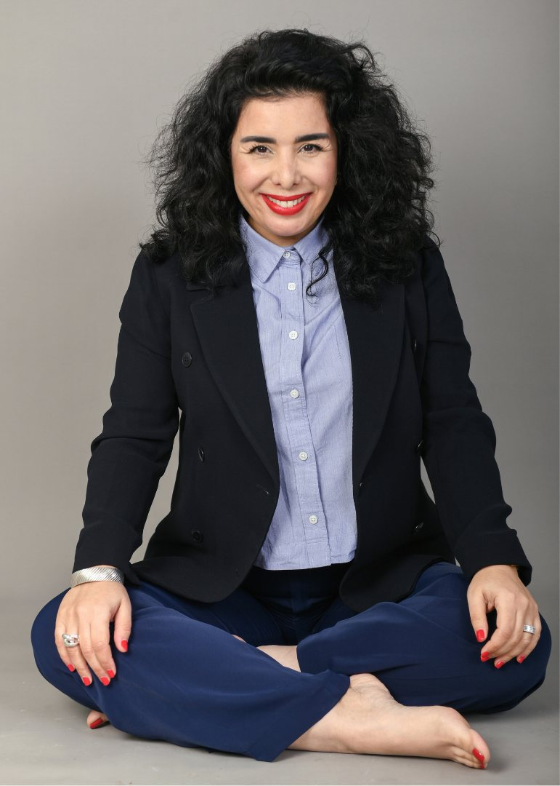
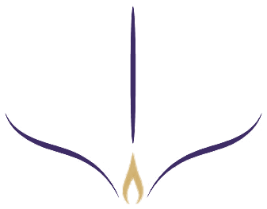
SHIDO is a House of Yoga rooted in tradition, informed by science and open to the world.
Practice · Education · Events & Performance
One House, three ways in.
Whether you come to practise, to teach or to perform, every path at SHIDO rests on the same standard: understanding before execution.
-
03
Events & Performance
International events, sports partnerships and Yoga-based programmes for human performance.
Discover
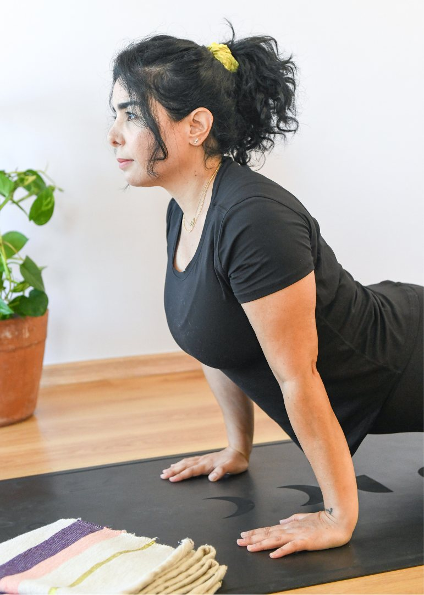
Beyond the Practice. Understanding the Body.
Yoga is a lifelong discipline. At SHIDO, practice goes beyond the execution of postures. It is an opportunity to understand the body, develop physical intelligence and cultivate a deeper relationship with emotional management, movement and breath.
Our teaching is built on quality of execution.
Quality of execution, understanding, adaptation and progressive development, for every body, at every stage of life.
Precision
Every posture is built with accuracy, respecting the body's natural mechanics.
Understanding
Anatomy, physiology and breath inform the practice: you know why you do what you do.
Progression
A gradual evolution, adapted to each person, towards greater strength, mobility and autonomy.
Body Intelligence Retreat, day one.
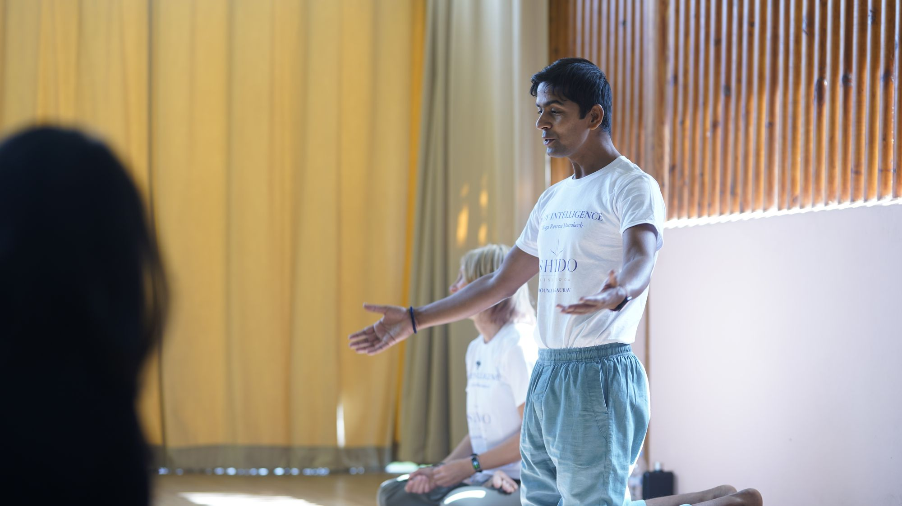
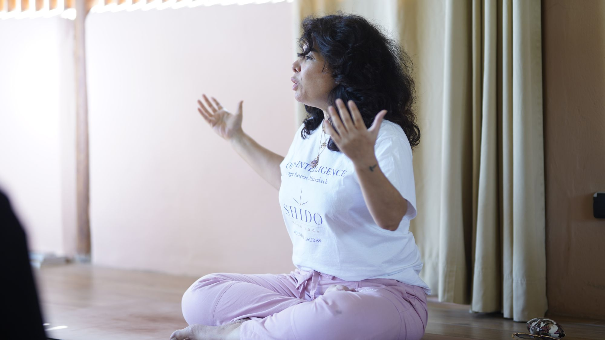
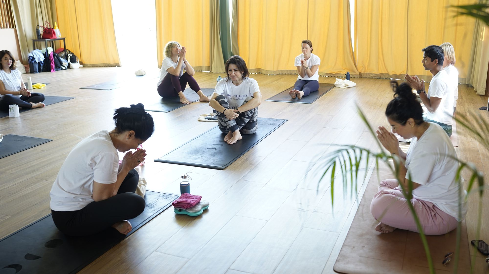
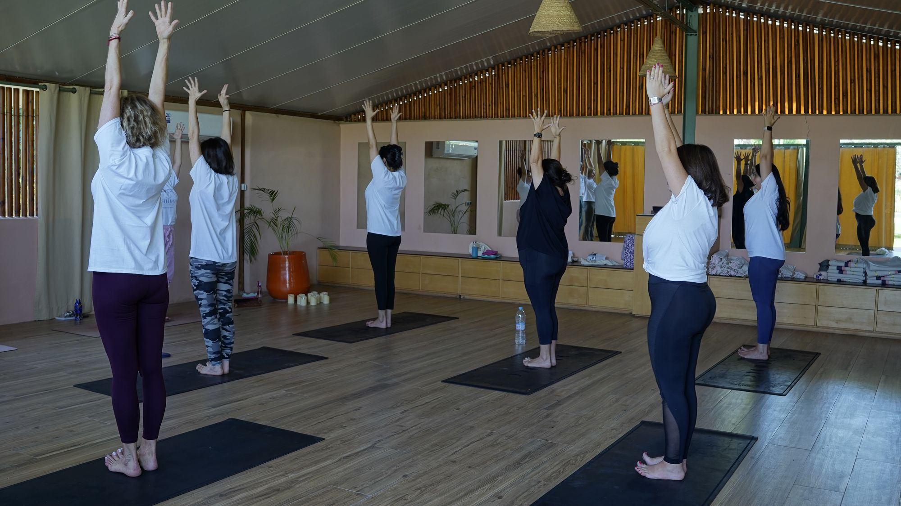
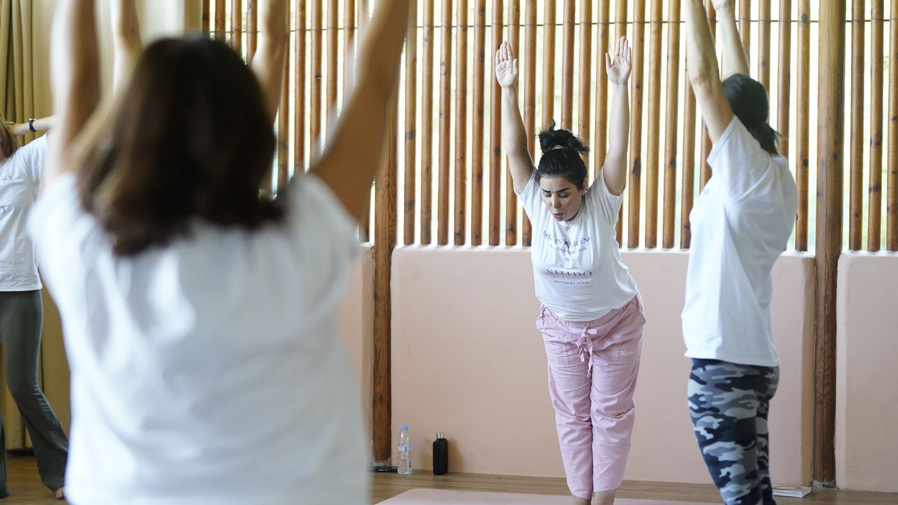
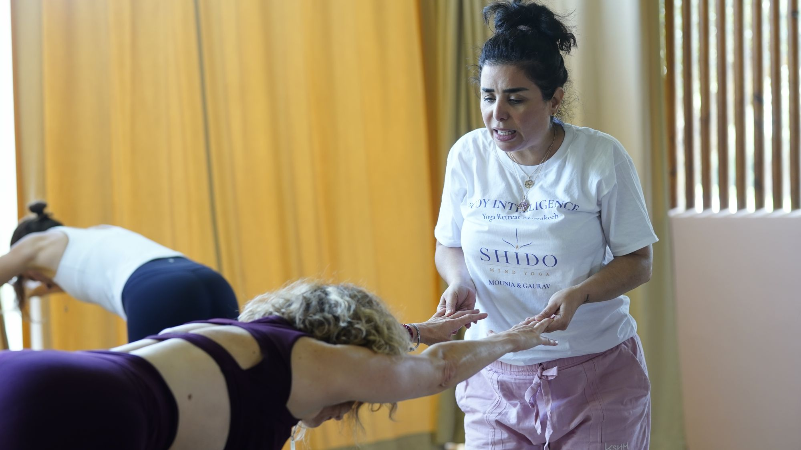
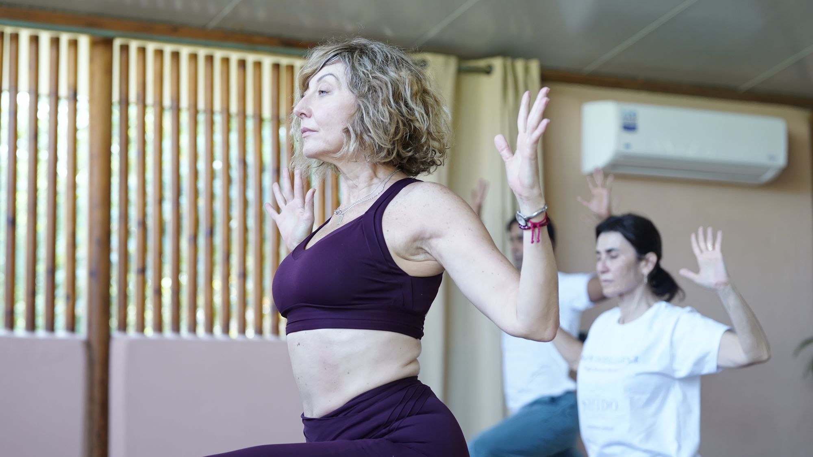
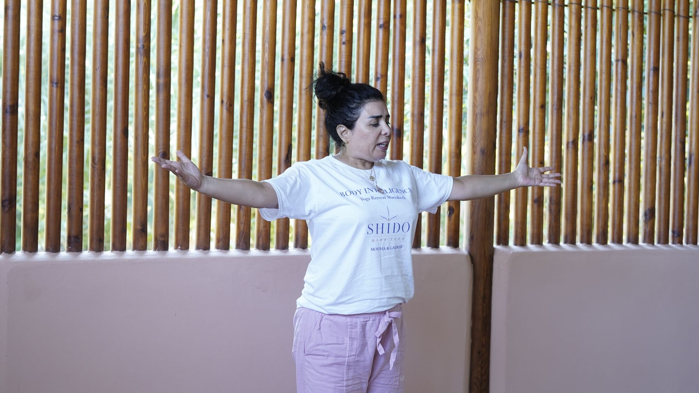
A Global Perspective on Yoga Education.
SHIDO welcomes experienced international Yoga teachers, senior educators and specialists who contribute to its programmes through masterclasses, seminars and advanced studies.
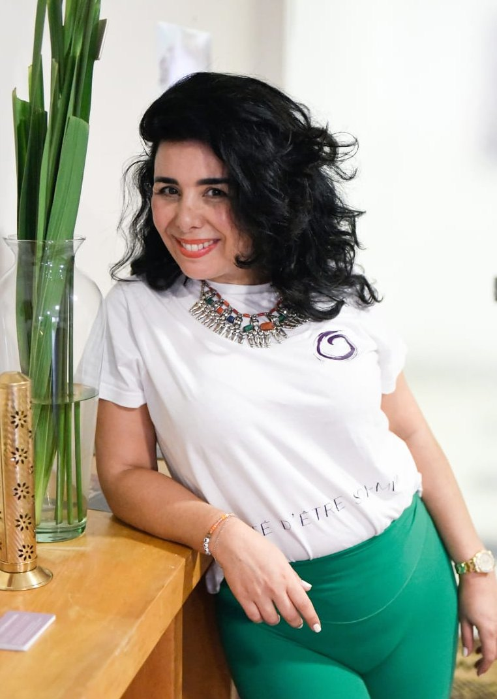
Read profileMounia Hammouda
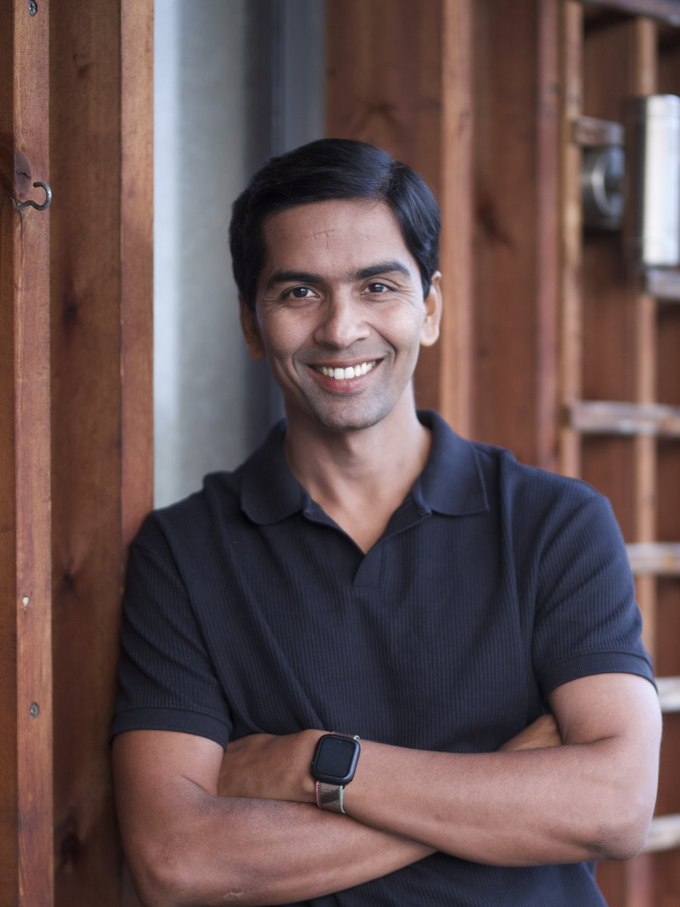
Read profileGaurav Kunwar Singh
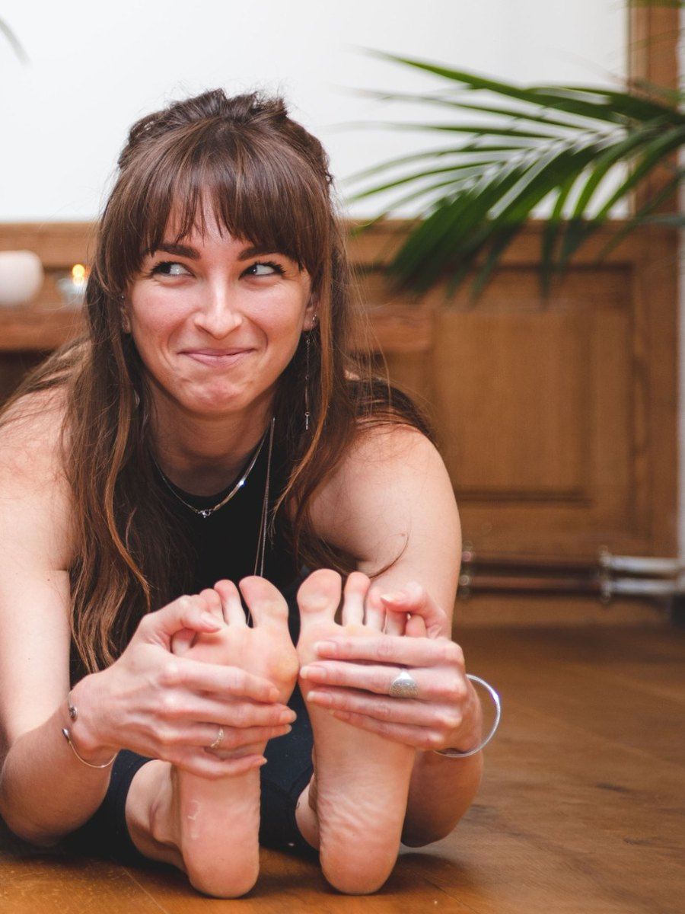
Read profileClaire Saintard
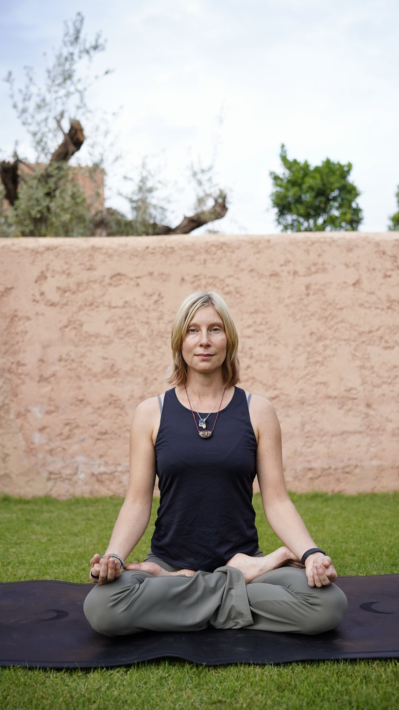
Read profileMaria
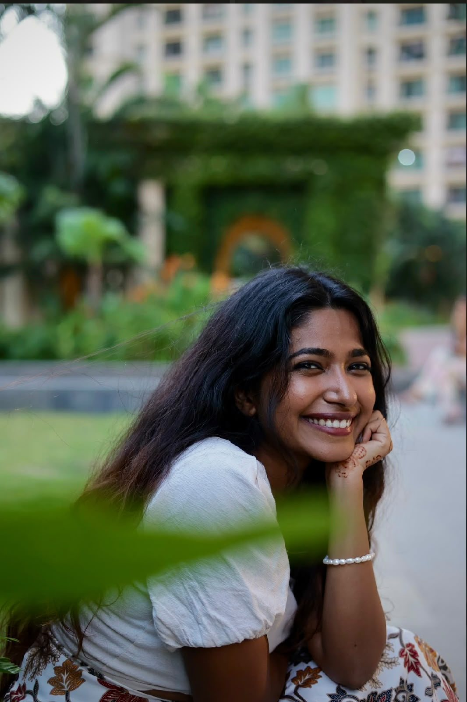
Read profileAnanya Anurupa
Five teachers from four countries, held to one standard.
Meet the facultyMounia Hammouda
After more than twenty-five years in international corporate and diplomatic environments, Mounia turned to Yoga as a path of health and self-knowledge. Trained at The Yoga Institute in Mumbai, in New York and with Dinah Rodrigues, she founded SHIDO to teach a Yoga that is rigorous, deeply human and accessible.
Yoga does not only transform the way we move. It lastingly transforms the way we inhabit our body, breathe and manage our emotions.
Your practice begins with understanding.
Group sessions of 75 minutes, in person, at 36B Boulevard d'Anfa, Casablanca. Equipment is provided.
- 75-minute sessions
- Small-group practice
- Booking through Momoyoga